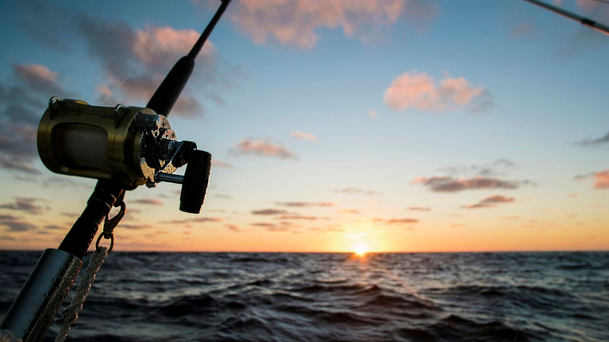

1. Partir des espèces recherchées
Tout découle de là. Pêcher des carangues aux tropiques, des bars en Atlantique ou des poissons à rostre dans l'océan Indien n'appelle pas le même matériel. Notez les espèces visées, les techniques prévues (bord, bateau, popping, jigging, traîne) et la saison.
2. Les cannes : penser transport
- Privilégiez des cannes de voyage multi-brins, compactes une fois démontées.
- Prévoyez un tube de transport rigide pour la soute.
- Emportez si possible une canne de secours : une casse loin de tout peut ruiner un séjour.
3. Moulinets, tresse et bas de ligne
La puissance de frein et la capacité du moulinet doivent correspondre aux espèces. Le diamètre de tresse et de bas de ligne se calibre selon la taille des poissons et la nature des fonds (coraux, roches). Faites bobiner vos moulinets avant le départ : sur place, c'est rarement possible.
4. Les leurres spécifiques
Chaque destination a ses leurres qui font la différence : poppers et stickbaits pour les chasses en surface, jigs pour la verticale, poissons nageurs pour la traîne. Prévoyez des hameçons et anneaux de rechange adaptés aux gros poissons.
5. La checklist complète
- Cannes + tube de transport
- Moulinets bobinés + bobines de rechange
- Tresse et bas de ligne de rechange
- Leurres, hameçons, anneaux brisés, émerillons
- Pinces, gants de combat, lunettes polarisantes
- Vêtements anti-UV, casquette, crème solaire
- Petite trousse de réparation (colle, ruban, anneaux de canne)
6. Transport aérien et réglementation
Vérifiez auprès de votre compagnie les conditions de transport des cannes et des objets coupants (hameçons, pinces), généralement à placer en soute. Renseignez-vous aussi sur la réglementation de pêche locale : licence, zones protégées, pratique du no-kill.
Se faire accompagner
Chez Fish and Ships, nous préparons votre équipement sur-mesure selon votre destination et les espèces recherchées. Venez avec votre programme : nous construisons ensemble la bonne configuration.
Questions fréquentes
Comment transporter ses cannes à pêche en avion ?
Utilisez des cannes de voyage multi-brins rangées dans un tube rigide, généralement en soute. Vérifiez les conditions de votre compagnie aérienne.
Faut-il une licence de pêche à l'étranger ?
Cela dépend du pays : renseignez-vous sur la réglementation locale (licence, zones protégées, no-kill) avant le départ.
Vous préparez un voyage de pêche ?
Parlez-nous de votre destination, nous préparons votre équipement sur-mesure.